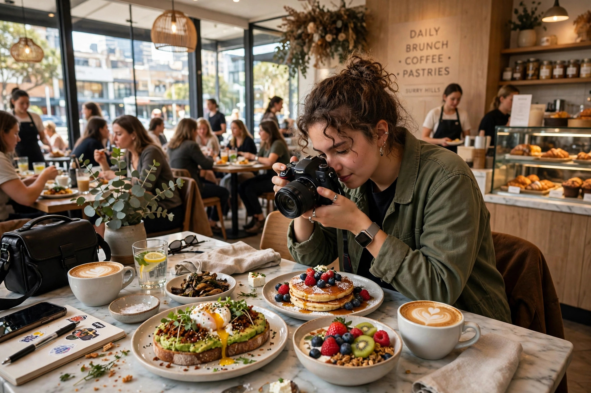

Influencer marketing for cafés Australia
Influencer marketing for cafés and restaurants in Australia: what actually works
A beautiful photo of your food is not a marketing plan. What fills tables is the right local creators, posting the right dish, to people who live close enough to come in this weekend.
LocalCreators team · 27 November 2026 · 5 min read

A crowded market — and a local opportunity
There are about 89,000 cafés, restaurants, and takeaway food businesses in Australia, with turnover of $66.3 billion in the 2025 financial year, according to Tourism Research Australia in June 2025. That is a lot of competition for the same Saturday brunch crowd.
Food is the most natural fit for creator marketing there is. People choose where to eat based on what they have seen and what friends recommend. A short Reel of your signature dish, filmed by someone locals follow, does more than a printed flyer — the viewer can see the food and check the address in the same minute.
Why nano creators work best for venues
Food creators with small, local followings outperform big names for venues: their followers eat nearby. A Virev 2026 study of 391,731 Instagram creators found nano creators (1,000 to 10,000 followers) had a median engagement rate of 2.1%, compared with 0.5% for mega creators.
There is also a practical advantage. A nano creator will actually come in, sit down, and eat the meal. A bigger creator may send a manager, ask for a fee your café cannot pay, or post a photo taken months ago. Nano creators are affordable, available, and believable when they say the food is good.
One creator is not enough, though. A single post reaches a few hundred people. Ten creators posting in the same week creates the feeling that your café is the place everyone is talking about — and that feeling is what gets people to book.
What actually works: five things that fill tables
- Lead with one dish, not the whole menu. Pick the dish people photograph, or the one you are known for. One hero dish, filmed well, beats a tour of everything you serve.
- Show the place, not just the plate. The light, the tables, the queue at the door — that is what tells a viewer "I could be there on Saturday".
- Give followers a reason to come this week. A limited dish or a quiet-night offer gives people a reason to act now instead of saving the post and forgetting it.
- Post when people are deciding. A brunch Reel on Thursday or Friday catches weekend planning; a dinner post at 4pm catches the "where should we eat tonight?" conversation.
- Repeat monthly, with different creators. One burst fades. A steady rhythm — new creators each month, same suburb — keeps your café in the local conversation.
What it costs a café or restaurant
The Australia Experiences benchmark from August 2026 puts Australian nano creator rates at $100–$400 per post, and micro rates at $300–$3,000 per post. A Virev 2026 study of 391,731 Instagram creators found a median sponsored post cost of $110 for a nano creator, versus $636 for a micro creator — so one micro post can cost more than a whole month of nano creators.
Eros, which serves Sydney venues with suburb-level matching, charges A$99 a month on a 12-month plan. Apfluencer, which works across five cities, charges $199–$599 a month. Posted charges $500 a month with a $5,000 contest minimum, according to its help centre in October 2026 — well out of reach for most cafés. LocalCreators is priced for venues: Starter is $79 a month for five creators, Growth is $99 a month for ten, and a one-off bundle is $149. Creators keep 85–90% of what you pay. See pricing, and our guide to how much nano creators cost in Australia.
Gifted meals vs paid posts
Many cafés start with gifted meals: a free brunch in exchange for a post. It can work for a first try, but creators who work for food alone are often the least reliable, and you have little say over timing or quality. A small cash payment on top of the meal changes the relationship: it is a job, with a brief, a deadline, and an approval step.
Disclosure: do not risk the fine
Paid posts must be clearly disclosed in Australia. In March 2026 the ACCC fined PhotobookShop $39,600 for influencer disclosure failures — an amount that would wipe out months of profit for a small venue.
The fix is simple: every paid post carries a clear #ad or Paid Partnership tag, and you check it before the post goes live. On LocalCreators, disclosure tags are added automatically and you approve every post first.
How to measure whether it worked
Likes are not the measure. Booked tables are. Before a campaign, decide what you will track: bookings that mention the post, profile visits, saves, and covers on the nights the creators posted. Compare the campaign week with a normal week, then rebook the creators whose posts moved the number that matters.
For the wider approach, read our small-business guide to nano influencer marketing in Australia, or our guide to finding UGC creators in Sydney without an agency. Or skip the search: see how LocalCreators works.